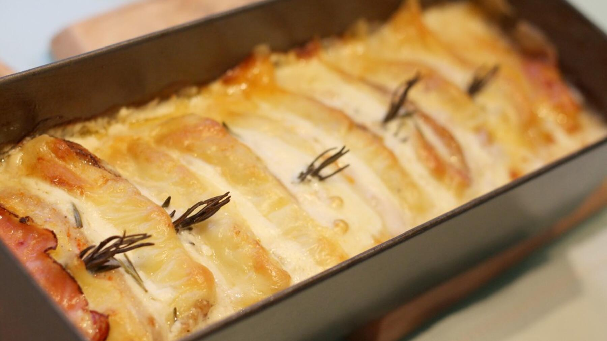

Zurück zur Übersicht
Bruzzelfleisch
Fleischscheiben, Zwiebeln, Schinken und Käse senkrecht in die Form geschichtet und in Sahne im Ofen gegart.
- Zeit
- 1 Std. 20 Min.
- Schwierigkeit
- mittel
- Kategorie
- Ofen
- Ernährung
- mit Fleisch
Zutaten
Portionen
- 500 gSchnitzel, halbiert, oder Filet in Scheiben
- 2große Zwiebeln, in Scheiben oder Streifen
- 200 gSchinken oder Rauchfleisch
- 200 gKäse in Scheiben (Emmentaler, Appenzeller o. Ä.)
- 1 BecherSchlagsahne
- 100 gGeriebener Käse, möglichst die gleiche Sorte
- Salz und Pfeffer
- Paprikapulver
Zubereitung
- Die Fleischscheiben mit Salz, Pfeffer und Paprikapulver würzen.
- Abwechselnd mit Zwiebeln, Käse und Schinken senkrecht in eine möglichst schmale Auflaufform schichten.
- Die Sahne leicht aufschütteln und über dem Fleisch verteilen. Den geriebenen Käse darüberstreuen.
- Bei 160 °C Umluft je nach Fleisch 45–60 Minuten im Ofen garen.
- Wenn das Fleisch gar ist, den Sud abgießen und binden oder einfach so lassen.
Tipp: Dazu passen glasierte Kartoffeln, Spätzle oder Knödel und ein Salat. Es geht jedes Fleisch, Rind braucht etwas länger.